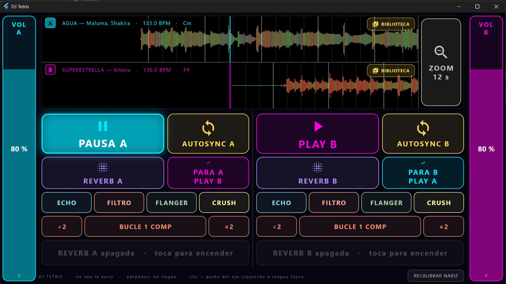
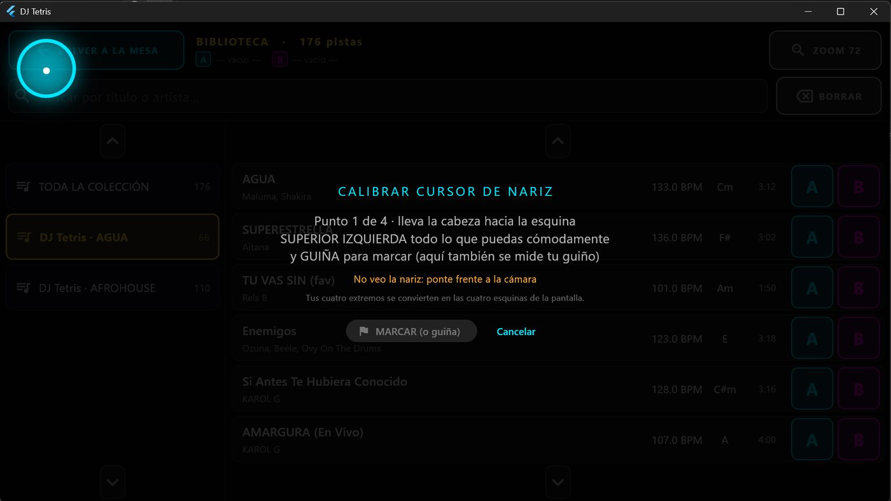
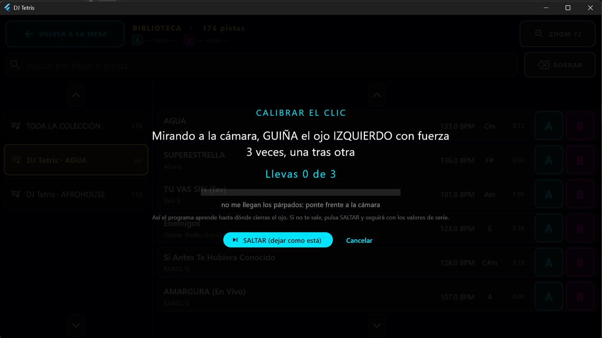

Pinchar sin manos.
Una persona con tetraplejia controla la música y el ordenador con la respiración y la cabeza. Unos 25 € en materiales.
Carlos Humanes, ingeniero biomédico.
El problema
Lo barato es un interruptor. Lo que mide de verdad es caro o no llega a España.
desde 1.850 €
unos 1.850 € en materiales
Cuentas en materiales, redondeadas. Estimación, no presupuesto.
La tabla completa, con fuentes
| Producto | Qué hace | Precio | Dónde |
|---|---|---|---|
| Pulsador de soplo BJ-101 (Qinera) | Interruptor: soplar o no soplar | 200,20 € con IVA | España |
| Breeze (Origin Instruments) | Proporcional, ±4 kPa como ejes de joystick | 176 USD de lista. Dos unidades puestas en España, estimación: 420 a 550 € | Estados Unidos, sin distribuidor en la Unión Europea |
| QuadStick | Mando bucal con cuatro sensores de soplo y succión | 449 a 549 USD de lista. En revendedores europeos desde 970 € | Estados Unidos; revendedores en Francia y Bélgica |
| IntegraMouse Plus | Ratón de boca | 1.850 a 2.420 € | Europa |
| Nuestro sip & puff | Proporcional, ±5 kPa, soplo y succión, USB sin instalar nada | Unos 25 € en materiales | Se monta con componentes estándar |
Precios comprobados el 24 de noviembre de 2026 en las fichas de los fabricantes y distribuidores. Los del QuadStick en Europa y del IntegraMouse proceden de extractos de buscador. El Breeze está convertido a 0,90 € por dólar. El estudio de mercado completo, con fuentes, está disponible a petición.
La propuesta
Dos canales que la persona ya domina.
La respiración decide cuánto
Soplar flojo sube poco; soplar fuerte, del todo. Aspirar baja.
Mueve el ratón arriba y abajo por aquíLa cabeza decide qué
La nariz mueve el cursor. Un guiño, la lengua o un soplo fuerte pulsan.
Mueve el ratón por aquí: la nariz te sigueSin manos, sin contacto, nada invasivo.
Cómo funciona
El aparato de soplo
- Sensor de ±5 kPa; a la boca solo llega un tubo con boquilla.
- USB: el ordenador lo ve como MIDI, sin instalar nada.
- 100 lecturas por segundo, umbrales por persona, unos 25 € en materiales.
La nariz como ratón
- Webcam corriente y calibración de cuatro esquinas.
- Clic con un guiño, la lengua o un soplo fuerte.
- Vale para todo Windows: navegador, mensajes, videollamadas, dictado.
Una familia de programas para Windows, un solo código.
Así se ve
DJ Tetris, el programa que se instala en casa.






Capturas de la prueba del 7 de noviembre de 2026, sin cámara conectada.
Estado real
Montado, sonando y probado con una persona.
- Aparato montado y funcionando.
- Sonando en una mesa de DJ profesional.
- Primera prueba con una persona usuaria y cámara real.
- DJ Tetris entregado a un usuario para probarlo en casa.
Material
- Portfolio profesional13 páginas, PowerPoint, 44 KB
- Pinchar sin manos, para sanitarios11 páginas, PowerPoint, 48 KB
- DJ Tetris Sip & Puff, guía rápida10 páginas, PowerPoint, 45 KB
- Ratón de nariz, guía rápida11 páginas, PowerPoint, 45 KB
Contesta
Contestar el teléfono hablando.
App Android: anuncia quién llama; «contesta», «rechaza» o «cuelga la llamada». Descuelga por voz en un Galaxy A15; la versión 0.6 está pendiente de probar.
Otros proyectos
- CazaNotasaudio a MIDI, C++ y JUCE
- SIROPEinstrumento VST3, 62 instrumentos, 121 presets
- dj_hands_appDJ por gestos con la cámara, Flutter
- VINILOtocadiscos simulado, sin conexión
- Consola retro portátilRaspberry Pi 4, carcasa impresa en 3D
- Mini consola bare-metalC sobre Cortex-M0+
- Droide BB-8aprendizaje por refuerzo en simulación
- Piezas en PLAcejilla de guitarra, adaptadores
- Ecosistema de agentesdiseño, vídeo, web, 3D y presentaciones, con un orquestador
Quién soy
Ingeniero biomédico. Quiero abaratar la tecnología de apoyo para personas con discapacidad motora. Construyo y pruebo antes de contar. También hago música como CLOSH.
Qué propongo
- Probar con personas usuarias: un PC, una webcam, el aparato y 30 minutos.
- Criterio clínico para ajustar los umbrales.
- Fundaciones y asociaciones: programas o contactos.
Una llamada de 20 minutos basta.
- Correo
- carloshumanes@hotmail.com
- Teléfono
- 664 728 069
- pendiente: enlace al perfil